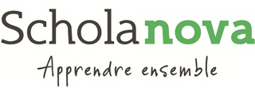

Schola Nova
Je réalise mon BTS Services Informatiques aux Organisations, option Solutions d'Infrastructure, Systèmes et Réseaux (SISR), au sein de Schola Nova.
Concrètement, on y travaille :
- Administration des systèmes informatiques.
- Configuration et gestion des réseaux.
- Installation et maintenance des infrastructures.
- Sécurité des systèmes et des réseaux.